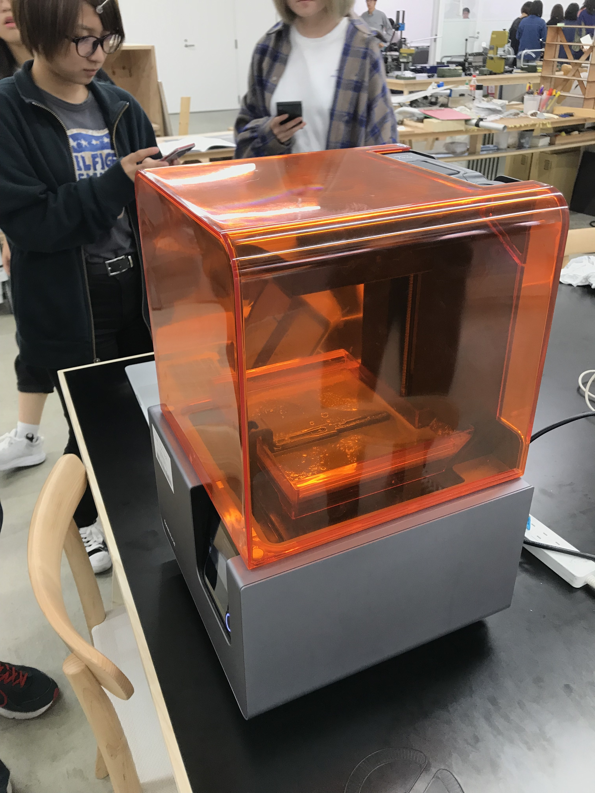
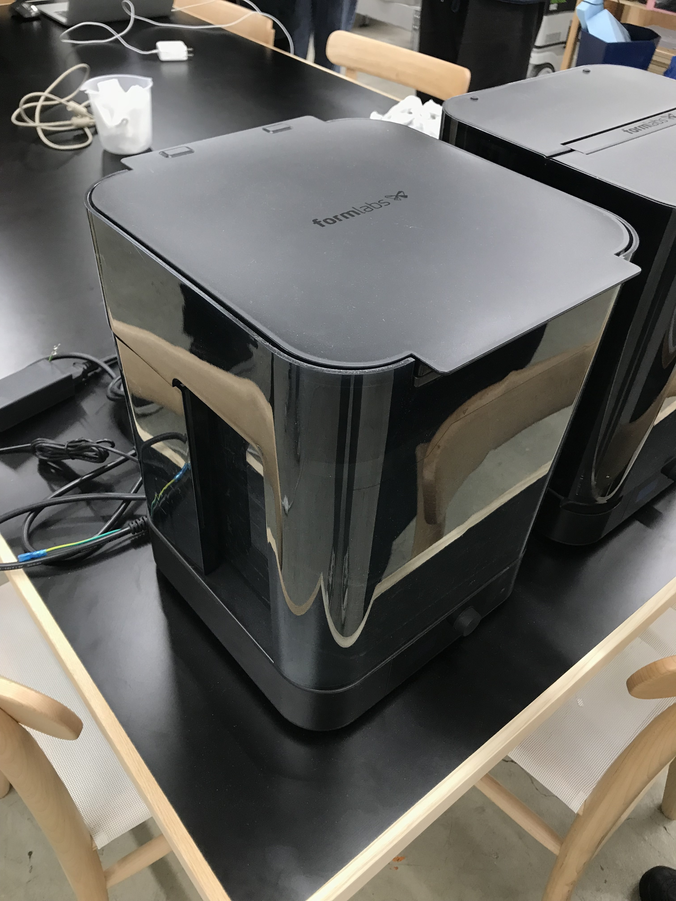
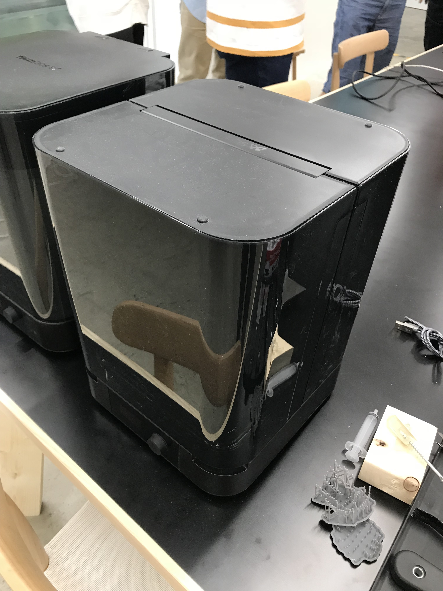
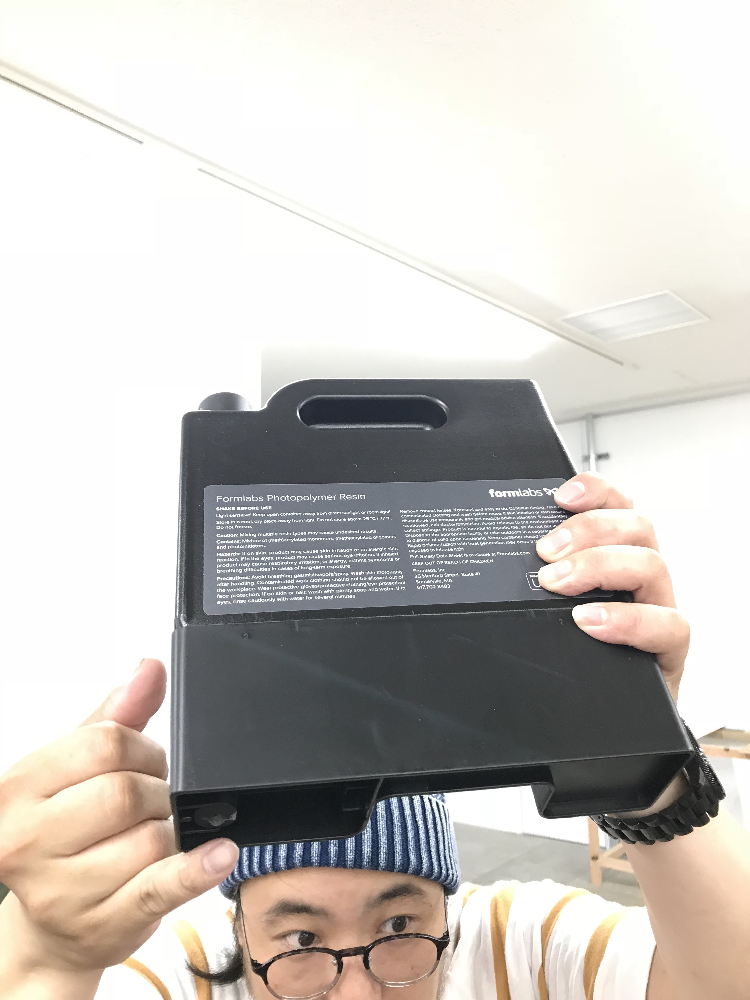
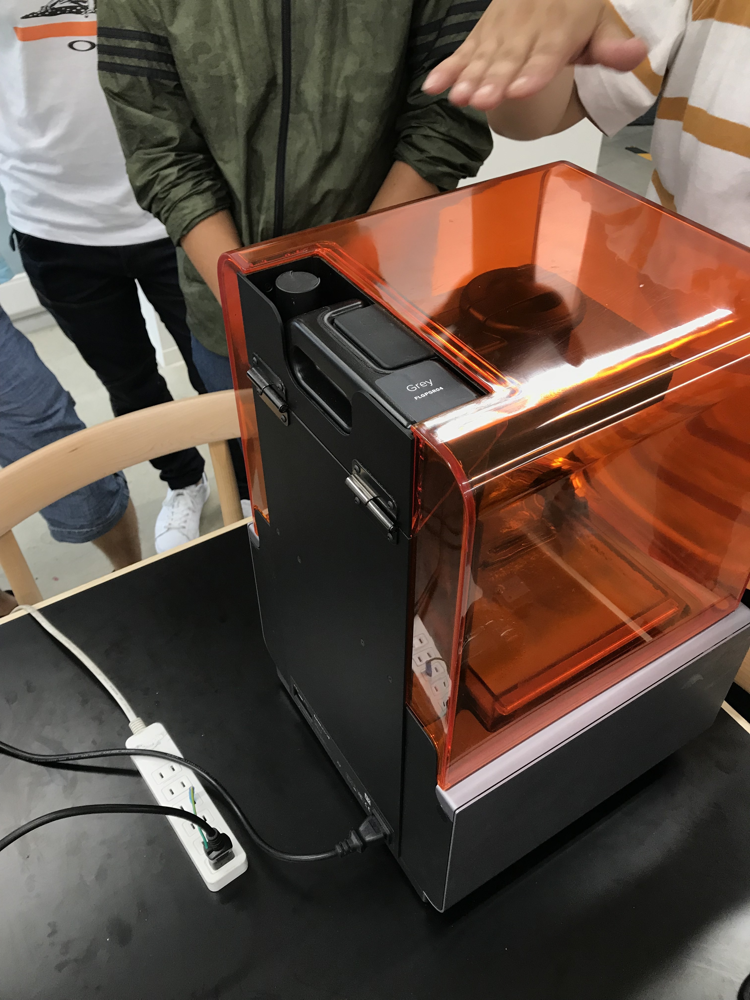
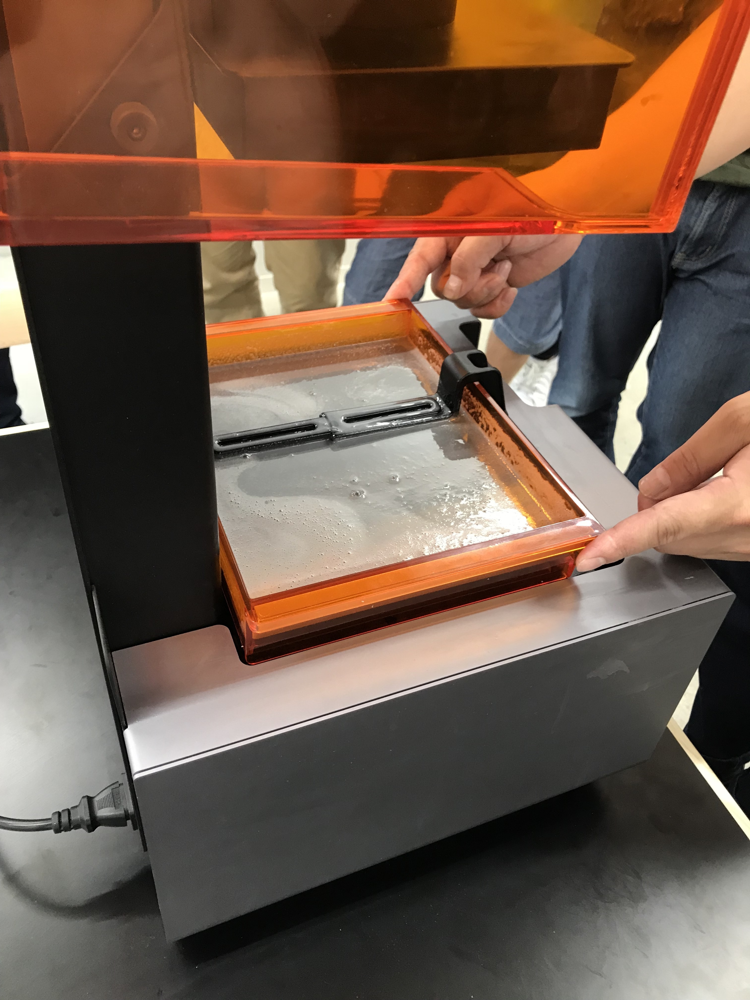
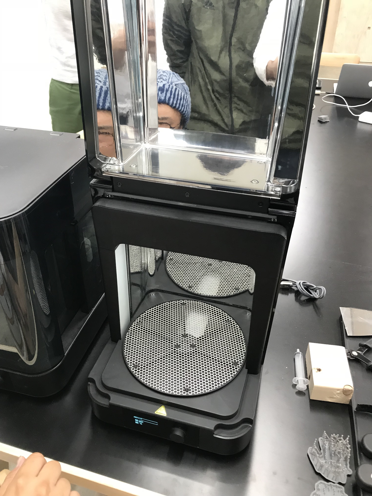
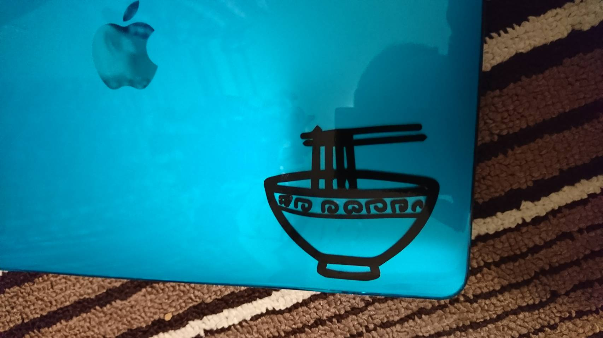

<!DOCTYPE html>

<html lang="ja" dir="ltr">
  <head>
    <meta charset="utf-8">
    <title>【第二回】加工工程実践（デジタルファブリケーション）</title>
    <style media="screen">
      #outer {
width: 400px;
height: 400px;
margin: 0px auto;
}
    </style>
    <link rel="stylesheet" href="https://cdn.jsdelivr.net/bxslider/4.2.12/jquery.bxslider.css">
<script src="https://ajax.googleapis.com/ajax/libs/jquery/3.1.1/jquery.min.js"></script>
<script src="https://cdn.jsdelivr.net/bxslider/4.2.12/jquery.bxslider.min.js"></script>
<script src="http://code.jquery.com/jquery-1.11.1.min.js"></script>
<script type="text/javascript">
        $(document).ready(function(){
            $('.slider').bxSlider({
                auto: true,
                pause: 5000,
            });
        });
</script>

</table>
  </head>
  <body>
    <h1>【第二回】加工工程実践（デジタルファブリケーション）</h1>
    <p>
    <hr color="blue">
    </p>

    <h2>1日目：6/14(木)3,4講時

    <p><h3>・レビュー
    <p><h3>・今週の課題説明
    <p><h3>・Illustrator事始め
      <br>
        <p><h4>図形の組み合わせ
    <p>
      <div style="padding: 10px; margin-bottom: 10px; border: 1px dashed #333333;">
    <p><h3>・感想　反省
      <p> ３Dプリンター班に決定。
  </div>

<hr color="blue">

    <P><h2>2日目：6/15(金)1-4講時

<P><h3>・CADとは？
<P><h3>・Tinkercadことはじめ
  <p><h4> <a href="https://www.tinkercad.com/#/" target="_blank">
  tinkercad 公式</a>
<P><h3>・各機材レクチャー(with UF TechnicalStaff)
<div style="padding: 10px; margin-bottom: 10px; border: 1px dashed #333333;">
  <p><h3><b>・今回使用したもの</b>
<h4><li><a href="https://fabble.cc/ultra/howtouse-formlabs-form2" target="_blank">3Dプリンター説明書</a></li>

    <p>
      <P><h3>3Dプリンター画像
        <div class="slider">
        
        
        
        
        
        
        
        </div>
        </div>
    </p>
    <div style="padding: 10px; margin-bottom: 10px; border: 1px dashed #333333;">
     <h4><li><a href="https://fabble.cc/ultra/howxtoxusexxgraphtecxce6000x" target="_blank">Vinyl（シール）</a></li>
       <p>
         <p><h3>・工程
           <p><h5>イラレでデータ作成
             <p>↓
               <p>vinylにデータ送信　
                 <p>書き出し&作成
         <P><h3>Vinyl画像
           <div class="slider">
           
           

           </div>
  </div>


  <div style="padding: 10px; margin-bottom: 10px; border: 1px dashed #333333;">
  <p><h3>・やること
  <p><h4> ３Dのデータさくせい
      <p><h4>　何かのキャップ
  </div>

<hr color="blue">

  <P><h2>3日目：6/18(月)1-4講時

<P><h3>・データ準備・修正（作業時間）
<P><h3>・加工実践（各機材）
  <p>
  </p>

<div style="padding: 10px; margin-bottom: 10px; border: 1px dashed #333333;">

    <h3>・感想　反省
  </div>
<p>
<hr>
</p>
<li><a href=".././ex01/index.html">【第一回】安全講習&加工工程実践（電動手工具等）</a></li>
<li><a href=".././ex03/index.html">【第三回】製造工程研究</a></li>
<p>
<hr>
</p>
<li><a href="../index.html">material　Home</a></li>
<li><a href="../../index.html">Home</a></li>
  </body>
</html>
